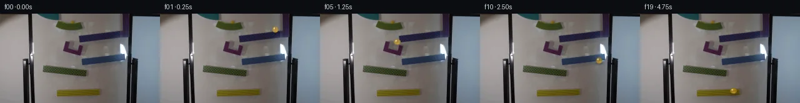

![首帧]()

Round 00
2026-11-05T05:46:32.996588+00:00像素候选变化代码 +194/−0inspection 更新
pixels 30a45cdb79ca4492 · code 504ef2d821ce7d20
查看本轮 generate.py 真实 diff
--- previous/generate.py
+++ current/generate.py
@@ -0,0 +1,194 @@
+#!/usr/bin/env python3
+"""Generate the locked-camera magnetic-ramp marble sequence.
+
+The photographed setup is retained from first_frame.png. Only a small,
+analytically shaded/refractive glass marble and its contact shadow are
+composited into frames 01-19.
+"""
+
+from pathlib import Path
+import math
+
+import numpy as np
+from PIL import Image, ImageDraw
+
+from artifact_io import save
+
+
+ROOT = Path(__file__).resolve().parent
+H, W = 144, 256
+
+# Measured key positions. Their alternating horizontal directions follow the
+# visible slanted ramp edges, while y never reverses (gravity remains clear).
+CENTERS = [
+ None,
+ (184.0, 25.0),
+ (168.0, 28.0),
+ (150.0, 31.0),
+ (132.0, 35.0),
+ (123.0, 45.0),
+ (112.0, 55.0),
+ (128.0, 64.0),
+ (148.0, 68.0),
+ (169.0, 72.0),
+ (190.0, 75.0),
+ (178.0, 77.0),
+ (157.0, 79.0),
+ (134.0, 82.0),
+ (110.0, 85.0),
+ (86.0, 88.0),
+ (103.0, 92.0),
+ (122.0, 96.0),
+ (139.0, 100.0),
+ (149.0, 124.0),
+]
+
+
+def bilinear_sample(rgb, x, y):
+ """Sample an RGB array at floating point coordinate arrays."""
+ x = np.clip(x, 0, W - 1.001)
+ y = np.clip(y, 0, H - 1.001)
+ x0 = np.floor(x).astype(np.int32)
+ y0 = np.floor(y).astype(np.int32)
+ x1 = np.minimum(x0 + 1, W - 1)
+ y1 = np.minimum(y0 + 1, H - 1)
+ fx = (x - x0)[..., None]
+ fy = (y - y0)[..., None]
+ a = rgb[y0, x0] * (1.0 - fx) + rgb[y0, x1] * fx
+ b = rgb[y1, x0] * (1.0 - fx) + rgb[y1, x1] * fx
+ return a * (1.0 - fy) + b * fy
+
+
+def over(dst, src, alpha):
+ """Alpha-composite float RGB source over destination in place."""
+ dst[:] = dst * (1.0 - alpha[..., None]) + src * alpha[..., None]
+
+
+def add_marble(frame, cx, cy, frame_no, distance_travelled):
+ """Composite a small yellow glass sphere using analytic masks and normals."""
+ # A mild vertical squash on landing frames suggests compliant contact but
+ # stays subtle enough for a hard glass marble.
+ squash = {5: 0.94, 7: 0.96, 11: 0.95, 15: 0.95, 19: 0.91}.get(frame_no, 1.0)
+ rx, ry = 5.15 / squash, 5.15 * squash
+ pad = 10
+ x0 = max(0, int(math.floor(cx - pad)))
+ x1 = min(W, int(math.ceil(cx + pad + 1)))
+ y0 = max(0, int(math.floor(cy - pad)))
+ y1 = min(H, int(math.ceil(cy + pad + 1)))
+ yy, xx = np.mgrid[y0:y1, x0:x1].astype(np.float32)
+
+ out = frame[y0:y1, x0:x1].astype(np.float32)
+ source = frame.astype(np.float32)
+
+ # Soft contact shadow. During longer falls it trails farther below and is
+ # lighter/diffuse, while ramp-contact frames have a compact shadow.
+ airborne = frame_no in (5, 6, 7, 14, 19)
+ shx = cx + (1.15 if not airborne else 1.8)
+ shy = cy + (4.3 if not airborne else 6.2)
… diff truncated; 107 more lines …